Empreendendo o futuro
Quem é você?
Por quê você está aqui?
Onde você quer chegar?
Quem sou eu?
Por quê estou aqui?
Empreendedorismo
é viver alguns anos da sua vida como a maioria não viveria, para passar o resto da sua vida vivendo como a maioria não pode.
Onde eu estou?
- Confraternizações mensais
- Equipe qualificada
-
Conferências
- MacBook Pro e iPhone
- Tecnologias inovadoras
- Em casa
- 10 minutos de distância de bicicleta
- 6 semanas de férias
- Promoção em menos de 6 meses
A natureza das coisas
Estudante
Universidade
Profissional
A vida do viajante
Antes
UFBA

Inglês
Francês

InfoJr
Microting
Trends
InPact.me
Depois
Pelas ruas que andei
Insucesso
Mentor
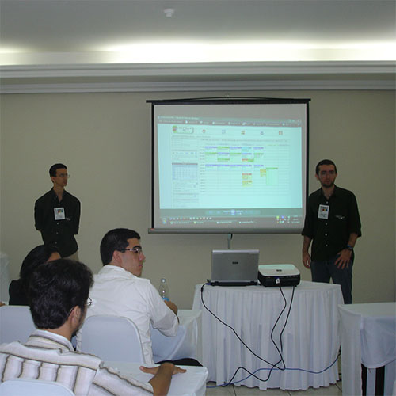
Aprenda
Kaizen
Fale
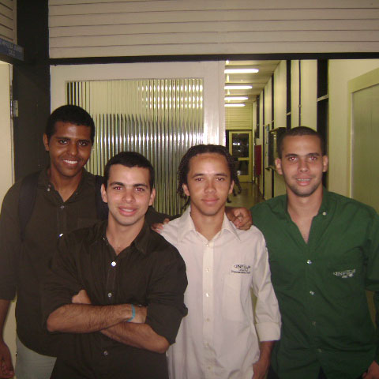
Lidere
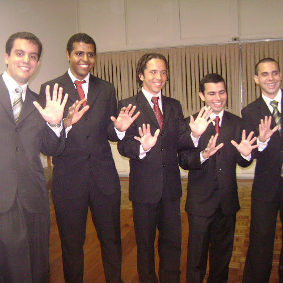
Promova
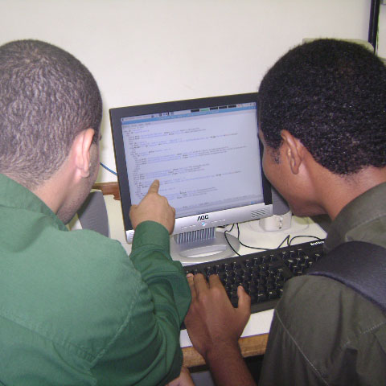
Projete
Realize
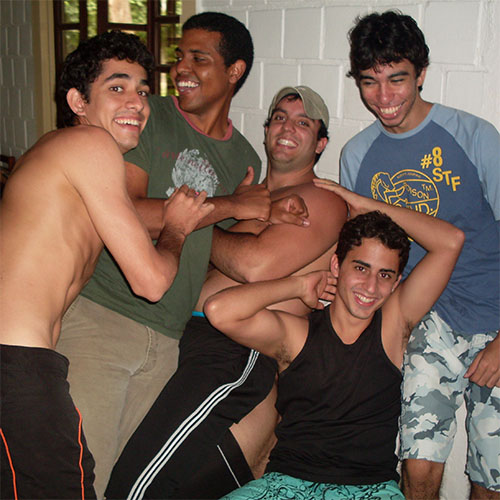
Celebre
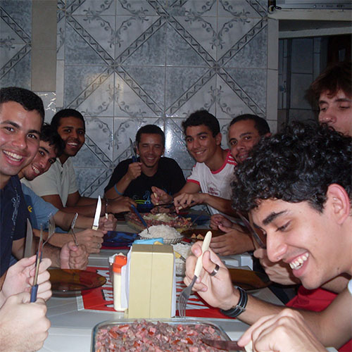
Coma
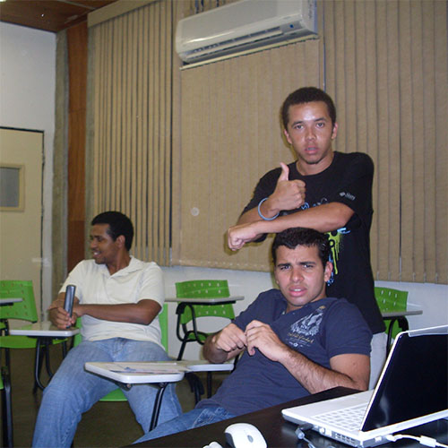
Ensine
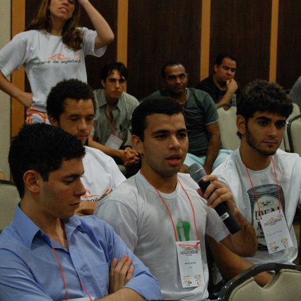
Comunique
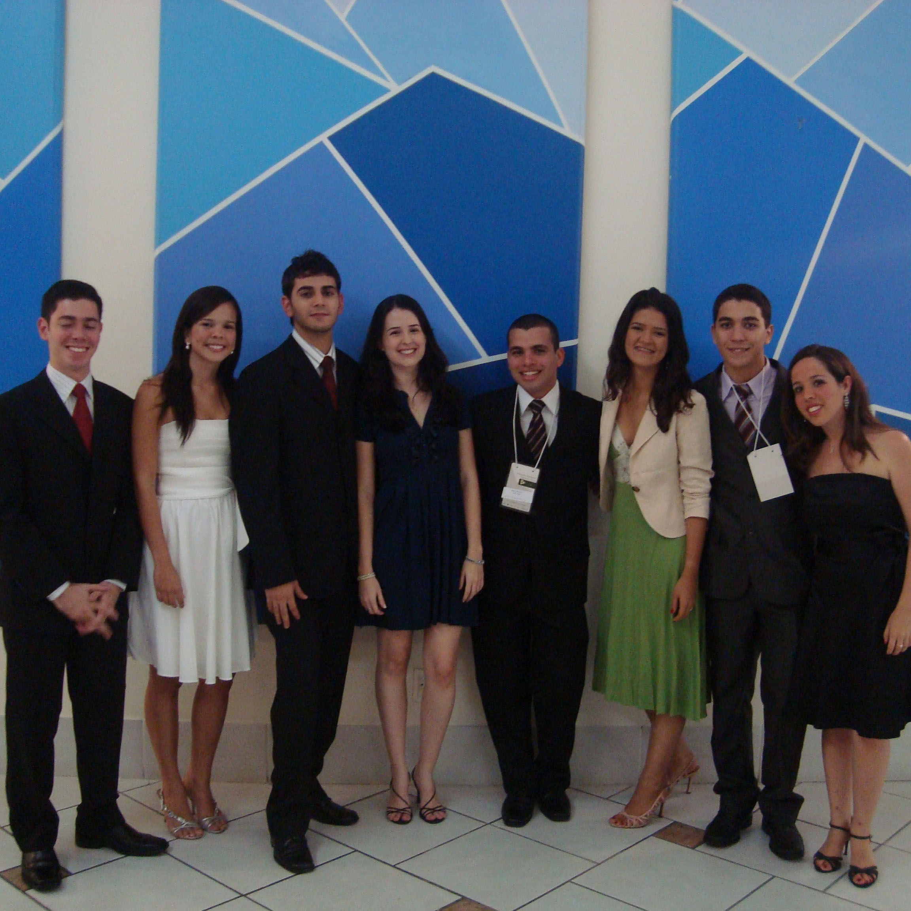
Envolva
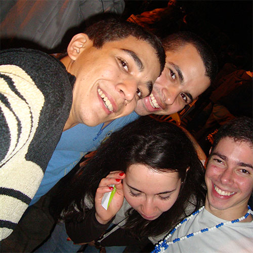
Network
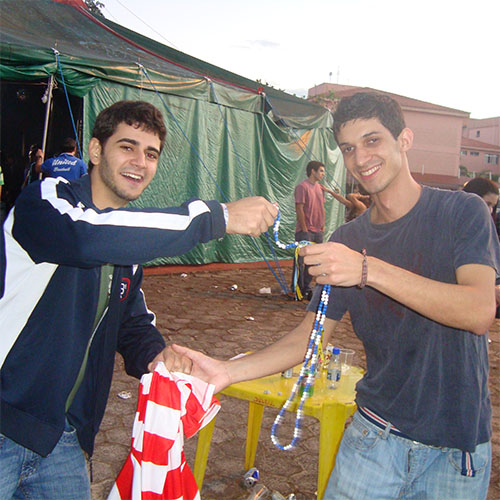
Negocie
Liberte
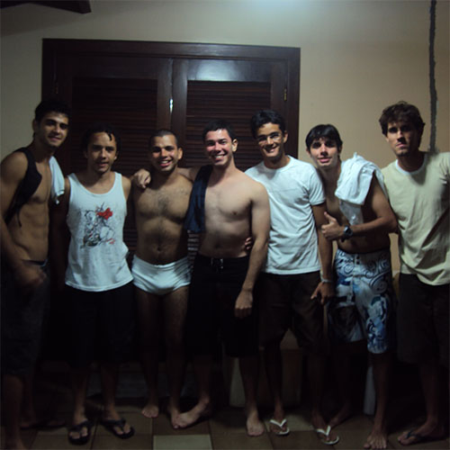
Erros